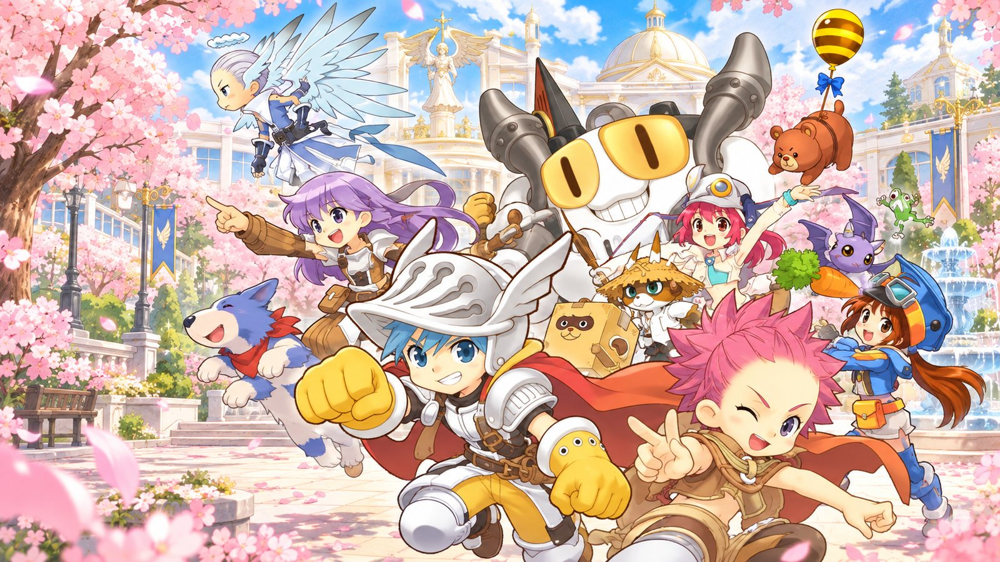
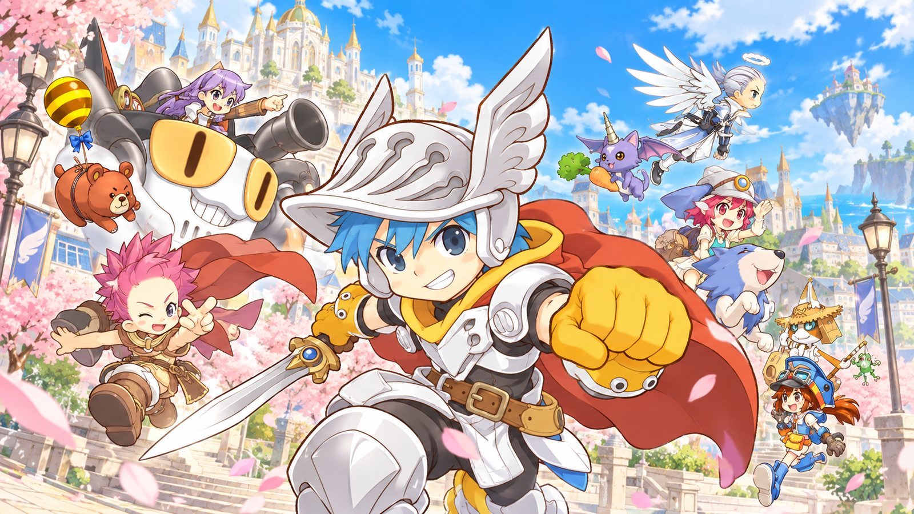
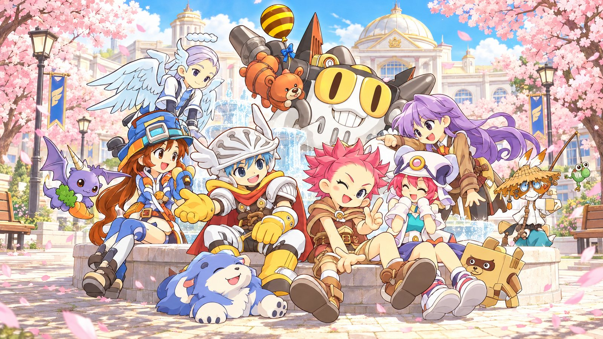

Cliente completo
El juego entero, listo para descomprimir. Solo hace falta descargarlo una vez.

✿ BIENVENIDO A ANGELS ONLINE LATAM
Reúne a tus amigos, adopta compañeros adorables y descubre un universo lleno de academias, criaturas y caminos por explorar.
Las cuentas se crean solo aquí: elige el nombre de usuario con el que entrarás al juego. Es gratis y toma un momento.
Descarga el cliente una vez y usa nuestro launcher: se encarga de mantener el juego al día.
El juego entero, listo para descomprimir. Solo hace falta descargarlo una vez.
Actualiza el juego automáticamente, muestra las noticias y abre el juego con un clic. Se actualiza solo.
Reserva tu nombre de usuario en esta página.
Descomprímelo en una carpeta, por ejemplo C:\AngelsOnline.
Copia AngelsLauncher.exe dentro de esa carpeta, junto a angel.dat, y ábrelo.
Pulsa JUGAR, entra con tu usuario y escribe la contraseña que quieras: esa será la tuya.
Si Windows muestra «Windows protegió su PC» al abrir el launcher, pulsa Más información → Ejecutar de todas formas. Es normal en programas nuevos sin firma.
Actualizaciones, eventos y avisos del servidor.

Dar el primer paso y seguir adelante junto a tus compañeros.
Ver posibilidades donde otros ven misterios.
Elegir un nuevo horizonte y disfrutar del camino.
Mascotas, robots y criaturas encantadoras te acompañan en cada aventura. Críalos, equípalos y hazlos evolucionar.
En la sección «Crea tu cuenta» de esta página. Desde el juego ya no se pueden crear cuentas: si escribes un usuario que no existe, el juego dirá que la cuenta o la contraseña no son correctas.
La primera vez que entras al juego con tu usuario. La contraseña que escribas en ese momento queda guardada como la tuya para las siguientes veces.
El cliente completo (una sola vez) y el launcher. El launcher va dentro de la carpeta del juego y lo mantiene actualizado.
No. El launcher descarga solo lo que cambió y verifica que llegue completo.
No. Funciona en Windows 10 y 11 sin instalar nada adicional.
No. Es una web de comunidad para este servidor, sin afiliación con el editor del juego.
